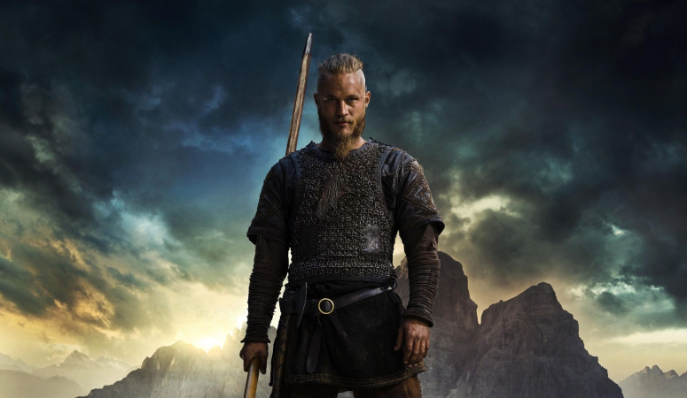
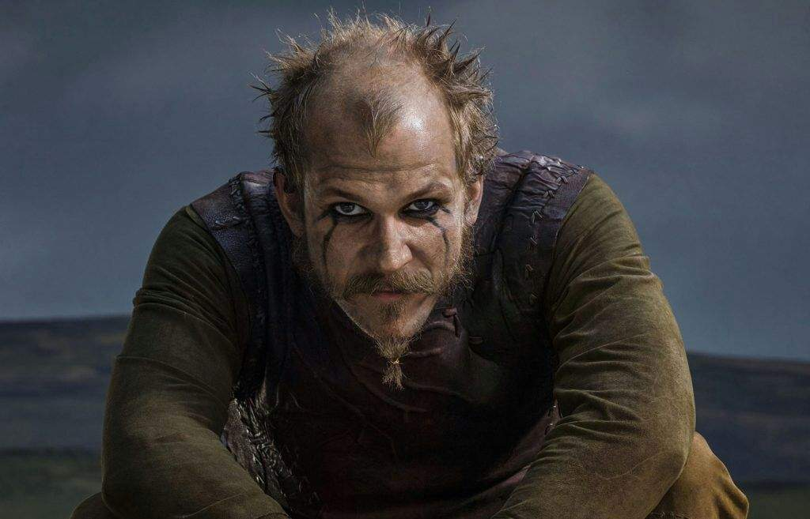
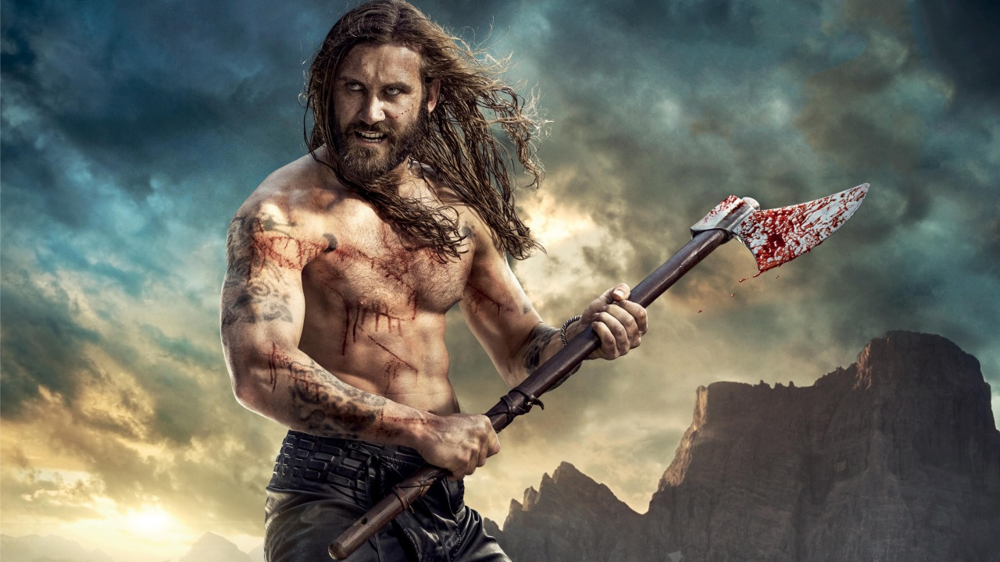
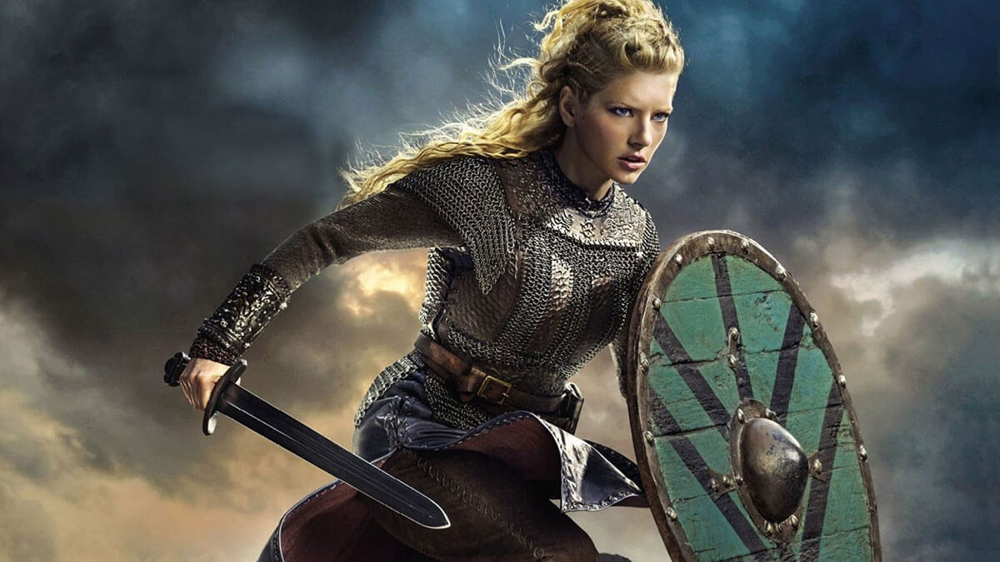

Рагнар
Рагна́р Лодбро́к (др.-сканд. Ragnarr Loðbrók) - полулегендарный скандинавский
конунг из рода Инглингов, ключевой персонаж сериала.
Умелый воин и амбициозный вождь, Рагнар на протяжении почти всей своей жизни следует пути викинга.
Рассекая море в поисках боевой славы и наживы, он стремится обрести новые знания, открыть
неизвестные земли и изменить нелегкую судьбу своего народа, живущего в суровых условиях
Скандинавского полуострова
Флоки
Флóки (др.-сканд. Flóki) - скандинавский кораблестроитель, активно участвующий в грабительских набегах викингов на страны Европы. Близкий друг и соратник Рагнара Лодброка. Эксцентричный и чудаковатый, он живет в уединенном доме в лесу, работая в своей мастерской на берегу моря.
Возлюбленный и муж Хельги. В их браке рождается дочь Ангрбода, но она умирает от лихорадки еще маленькой. Спустя много лет по настоянию Хельги Флоки вынужден удочерить мавританскую девочку Танарус, отношения с которой завершаются семейной трагедией.
Ролло
Ро́лло (или Хрольф, др.-сканд. Hrólfr, лат. Rollo, исторический прототип также известен под именами Ролло́н, Рольф и Роберт I) - известный вождь викингов, первый герцог Нормандский, основатель Нормандской династии. В сериале - старший брат Рагнара Лодброка. Знаменитый своей силой, бесстрашием и диким, импульсивным нравом, он активно участвует в разорительных набегах викингов на страны Европы.
Безуспешные попытки возвыситься на фоне влиятельного и удачливого брата приводят Ролло к ожесточенной внутренней борьбе, которая делает его несчастным и вынуждает искать пути выхода из кризиса.
Лагерта
Лаге́рта (или Хладге́рда, др.-сканд. Hlaðgerðr, лат. Ladgerda, Ladgertha или Lagertha; в сериале также носит псевдоним Ингстад) - известная скандинавская воительница, упомянутая в хрониках Саксона Грамматика, первая жена датского морского конунга Рагнара Лодброка. В сериале Лагерта активно участвует в походах викингов, колонизации ими новых земель и междоусобных распрях скандинавских вождей.
Эта отважная и независимая женщина способна проявлять железную решимость, когда дело касается ее личного достоинства, семьи или власти. Лагерта также известна своим милосердием и благородством.